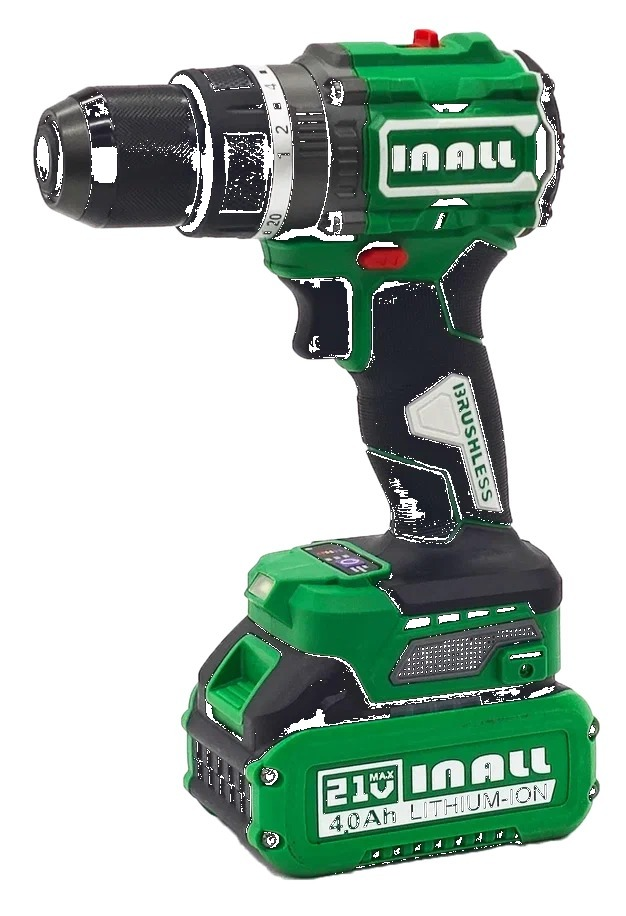
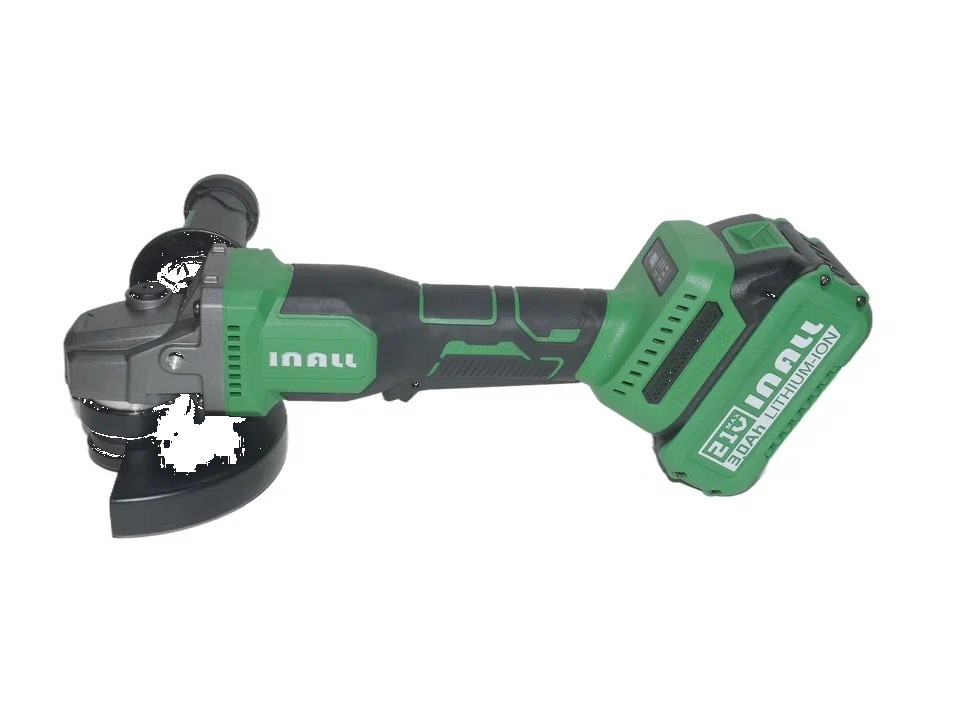
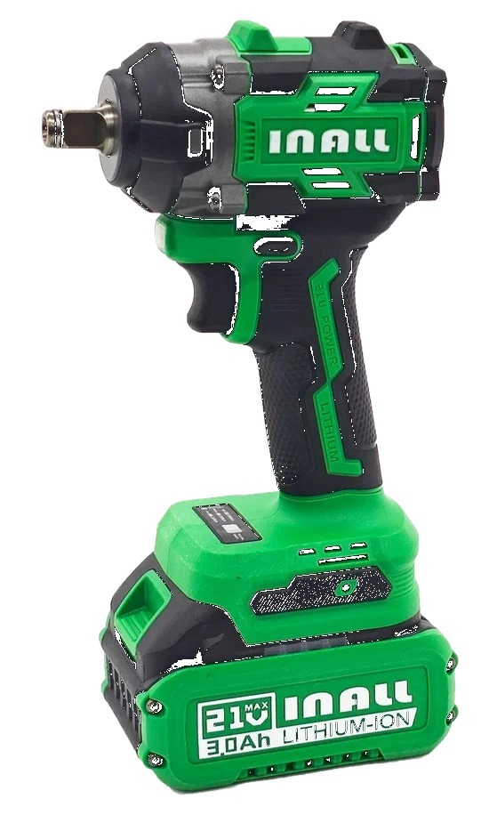

Своя марка · розница
INALL
Аккумуляторный бесщеточный инструмент. «У Михалыча» — единственный официальный дистрибьютор Inall в России.

Инструмент ориентирован на надёжную работу; перед продажей проходит проверку. По заявлениям бренда — уровень, сопоставимый с известными марками, за счёт тех же поставщиков комплектующих и контроля качества.
Что в линейке
- Дрели-шуруповёрты (разный вольтаж и момент)
- УШМ (болгарка) аккумуляторная
- Винтовёрт и гайковёрт ударные
- Аккумуляторы (в т.ч. аналоги популярных типоразмеров)



Скрипт продавца
- Спросите задачу: мебель / стройка / авто / резка.
- Уточните момент (Н·м), напряжение, комплектацию (2 АКБ + ЗУ + кейс).
- Дополнительно предложите биты и расходники MIKA под инструмент.
- «Это эксклюзив нашей сети, с официальной гарантией».
Каталог: gvozditut.ru/brands/inall